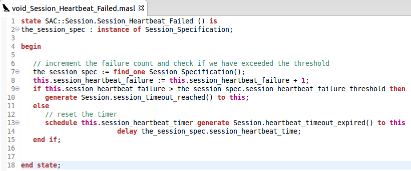
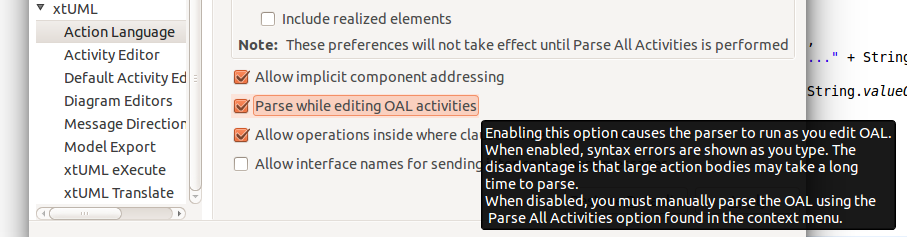

Release Highlights
MASL
convert, import, and export
Xtext-based MASL editor
New Generator
Model Compiler
major re-organization of MC internals
Separate docgen out of mcmc
MASL tooling
New preference to disable parse on edit
Exceptions (S_EXP) in the meta-model
Graphics auto reconciliation
|
MASL |
Modified Action Syntax Language support is a new feature in this release. MASL files specify both the structural and procedural parts of the model. BridgePoint now has the ability to convert MASL models into xtUML. The xtUML is imported into BridgePoint, edited in BridgePoint as usual, and then may be exported back out in MASL format in order to feed into downstream MASL model compilers (not included). Most users will not yet take advantage of the MASL features and will continue to model in xtUML and use xtUML model compilers. For interested users, the MASL documentation may be found at Help > Help Contents > BridgePoint UML Suite Help > Reference > MASL. BridgePoint includes a new MASL editor with syntax highlighting as part of the new feature set:  |
|
New Generator |
BridgePoint now includes a new generator application that is built on python. The new generator does not require wine to run on Linux and is free of Microsoft runtime DLL dependencies. The new generator is fully backwards compatible and will work seamlessly to translate new and existing projects, including BridgePoint itself. The source code and ongoing development may be found at http://github.com/xtuml/pyrsl and http://github.com/xtuml/pyxtuml.
|
|
Model Compiler |
The BridgePoint model compiler source models have been completely re-organized ahead of this release. The model compiler xtUML meta-model now lives it its own project in the model compiler repository. This re-organization allows the xtUML model compiler developers to have access to the xtUML meta-model in separate and individual tools that each packaged in their own project. This allowed the xtUML developers to split docgen (a model-based MC) out of mcmc (the modeled portion of xtUML MCs). The MASL model compiler tools are also part of the re-organization.
|
|
Disable Parse on Edit |
Users sometimes find degraded performance when editing very large action bodies. This is due to the fact that the OAL parser runs over the entire action body for each edit in order to provide real-time input about invalid OAL. BridgePoint now includes a preference that allows the user to turn off parsing while editing OAL. When this preference is set, the user must manually run “Parse All Activities” in order to flag invalid OAL. The preference is found at Window > Preferences > xtUML > Action Language:  |
|
Exception |
This release includes an xtUML meta-model change to add the class Exception (S_EXP). This element is used to store exceptions specified in MASL models.
|
|
Graphics Auto Reconciliation |
Graphical elements, both shapes and connectors, are now created automatically when the user opens a canvas-based editor and graphics do not already exist for the contained elements.
|
|
|
|